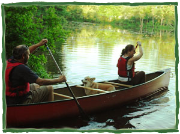

Nashoba Paddler Rentals 2013
OPEN May - October
SPRING (May 1- June 20):
Weekends & Holidays - 9:30 a.m. to 6:30 p.m.
(Weekdays by appointment)
SUMMER (June 21 - September 2):
DAILY 9:30 a.m. to 6:30 p.m. (until 8:00 p.m. on Fridays)
FALL (September 3 - October 31):
Weekends & Holidays - 9:30 a.m. to 6:30 p.m.
Weekdays by appointment
Rent quality Old Town canoes and kayaks on the beautiful, friendly Nashua River in West Groton, Mass. Launch from our rental site and paddle for hours in either direction! Our friendly rental staff will assist you with your boat, provide paddling and safety tips, give you an idea of what you might see on the river, and share the amazing story of the Nashua River's history. Have fun exploring the main channel of the Nashua, the smaller tributary of the Squannacook, and the pond-like ox bow of Dead River. Each season brings different experiences and sightings. We offer discounted weekday rental rates, season passes, and group discounts.
Paddles and life vests included for all ages.
*Payment by CASH or CHECK only*
| WEEKEND and HOLIDAY Canoe & Kayak Rental Rates | ||
| Boat Type | Per Hour | Day |
| Canoe | $16/1st hour, $14.00/additional hour | $51 |
| Solo Kayak | $15/1st hour, $14.00/additional hour | $49 |
| Double Kayak | $18/1st hour, $14.00/additional hour | $53 |
| Giant Canoe | $28/1st hour, $26.00/additional hour | $93 |
| WEEKDAY Canoe & Kayak Rental Rates | ||
| Boat Type | Per Hour | Day |
| Canoe | $15/1st hour, $13.50/additional hour | $46 |
| Solo Kayak | $14/1st hour, $13.50/additional hour | $44 |
| Double Kayak | $17/1st hour, $13.50/additional hour | $47 |
| Giant Canoe | $27/1st hour, $25/additional hour | $88 |
General Rental Rules
- Liability Release Form must be signed by all participants. Minors, under 18 yrs., must have a parent sign our liability release form.
- Person Flotation Device (lifejacket) MUST be worn at all times in boats.
- NO ALCOHOL or other substances which impair judgement.
SEASON PASSES |
||
| Individual Canoe | One canoe for passholder | $130 |
| Family Canoe | Two canoes, a passholder in each | $220 |
| Individual Kayak or Canoe | One solo kayak OR 1 tandem kayak OR 1 canoe for passholder. | $190 |
| Family Kayak or Canoe for 2 | Two solo kayaks, a passholder in each. One passholder may substitute 1 tandem kayak OR 1 canoe. |
$350 |
| Family Kayak or Canoe for more than 2 | One solo kayak for each family passholder, a passholder in each. Two passholders may each substitute 1 tandem kayak OR 1 canoe. Base price for 2 people is $350 plus $100 for each additional passholder, maximum $750 for 6 or more family members. |
$450-$750 |
SEASON PASS RULES
- Good for 2013 season only.
- Non-transferrable.
- Subject to availability.
- Good for first day of long-term rental. Additional days must be paid at long-term rental rate.
- Not applicable to XL Tripper or specialty boats.
- "FAMILY" includes individual plus spouse plus children up to age 24 living with parents.
- Passholders must bring season pass and present identification to rent boats.
- Liability Release forms must be signed at each rental.
- Use for off-site rentals permissible.
- GUESTS of Season Passholders renting boats receive 10% discount on rentals.
| LONG TERM Canoe & Kayak Rental Rates | ||||
| Boat Type | 1st Day | 2nd Day | 3rd Day | Each Day Thereafter |
| Canoe | $51 | $41 | $31 | $21 |
| Solo Kayak | $49 | $39 | $29 | $19 |
| Double Kayak | $53 | $43 | $33 | $23 |
| Giant Canoe | $93 | $83 | $73 | $63 |
OFF-SITE RENTAL RULES
- Liability release form must be signed by all participants. Minors, under 18 yrs., must have a parent sign our liability release form. Please note that participants not present at time of pick-up must provide signed liability forms in advance.
- Person Flotation Device (lifejacket) MUST be worn at all times in boats.
- NO ALCOHOL or other substances which impair judgement.
- Security deposit will be required on all off-site rentals.
PUT-IN Charge: $7 for each private boat being launched from our site which is accompanying a rental.
RESERVATIONS: Recommended for groups. Not usually needed for individuals- just stop by! If you do reserve, there is a 3-hour minimum rental charge.
DISCOUNTS: 10% discount to Nashua River Watershed Association members and MTA teachers. See below for GROUP DISCOUNTS.
BOAT SHUTTLE SERVICE: Available by appointment. (Minimum charge 3 boats) Ayer, Groton, Pepperell, Townsend: $14/first boat, $9 each additional boat, per trip. Lancaster, Still River: $22/first boat, $12 each additional boat, per trip.

GROUPS, COMPANIES, CLUBS, YOUTH PROGRAMS, REUNIONS, PARTIES!
An outing on the Nashua River is a perfect event for companies, groups and clubs. Paddling down a river brings people together in a new way. The Nashua is a friendly river, a fun and easy paddle for novices. Most group paddles are self-guided. We set you off off with maps, an overview talk about the Nashua River, including picnicking spots and some paddling and safety tips. Or you can arrange for a guided tour with our qualified guide/naturalists who can enrich your outing by sharing their experiences and knowledge of the places you'll explore as well as provide expertise in paddling and safety. Perhaps you'd like to arrange a River Classroom experience for your group.
Here is a sample of Group Trip Options:
- 2-3 hour round-trip paddle heading upstream from Nashoba Paddler to Dead River to see turtles or continuing further to the Squannacook River to see a beaver dam. Return downstream with the current. Our cheapest and most common option. (No shuttle involved)
- 2-3 hour paddle downstream from Nashoba Paddler to Pepperell Pond, ending at a picnic site at the Petapawag canoe launch on Rt. 119. Take some additional time to explore the pond area, if you'd like. (1 shuttle)
- 4-5 hour downstream paddle from Ayer to Pepperell with a beautiful, midway picnic stop among the pines. (2 shuttles)
- 4-5 hour excursion on the Nashua's tributary, the Squannacook, up to Bertozzi Wildlife Management area for a picnic and back again, for small groups. (2 shuttles)
GROUP DISCOUNTS: 10% discount when renting 6 or more boats.
SPECIAL GROUP DISCOUNTS for CAMPS, SCOUTS, AND SCHOOLS: 10% discount on rentals for any amount of boats. Plan a weekday outing and take advantage of our already discounted weekday rates. Reservations required. 3-hour minimum rental charge.
Overnight Accommodation Options:
- Wachuset Village Inn on Rt. 2 in Westminster is a wonderful coutry inn with quaint, cottage-style rooms
- Friendly Crossways Hostel & Conference Center in Harvard is a bunk-style hostel with kitchen privileges in a lovely setting
- Pearl Hill State Park campground for tent-camping in West Townsend

Nashoba Paddler, LLC
978-448-8699
LOCATION: 398 West Main St. (Rt. 225), Groton, Ma
MAILING ADDRESS: PO Box 228, West Groton, Ma 01472
All rights reserved, Nashoba Paddler, LLC 2013 ©